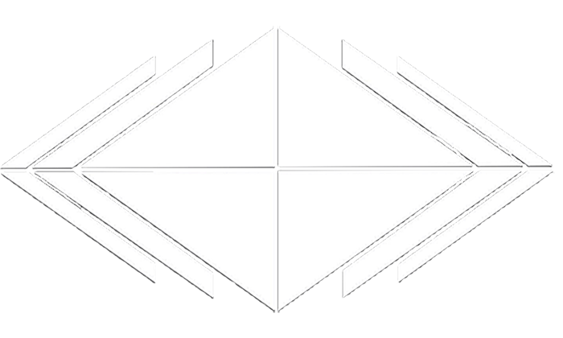
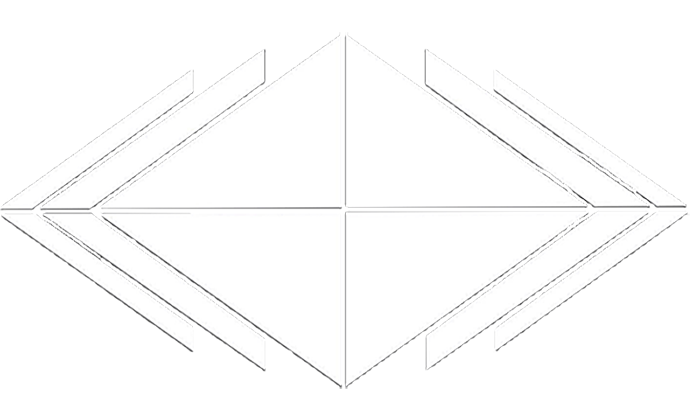

3RUN
3Run is a world leading professional parkour team specialising in the Arts Of Movement – Parkour / Free Running, Martial Arts & Urban Acrobatics. Providing high impact, visually provoking movement sequences for Film, Television, Live events and Photographic campaigns. 3RUN seek to break the mould - pushing the boundaries of performance with a new breed of performance athlete in an innovative and exciting way. 3RUN have developed an unrivalled level of experience based upon 10 years of professional performance, standing as a key influence over the development of Parkour and FreeRunning Worldwide.
Versatility and a reputation for the most skilled Parkour and Free running athletes in the world, 3RUN have been involved in countless ground breaking projects including 007 James Bond Casino Royale, award winning commercials for Microsoft Xbox, and a number or Guiness World Records that they have smashed. Continuing to develop as individuals as well as a performance team with boundless enthusiasm and ruthless determination, the 3RUN team place professionalism and performance focus at the forefront of their actions to ensure client’s expectations are exceeded time and time again. 3RUN came together in 2003 as a group of friends who share a similar passion towards learning and developing skills within the arts of movement. With the aim to build the world’s leading Parkour and Free running team, providing inspiration and support towards others. Determined to develop not only as physical performers, but also to develop as ‘good’ people, supportive friends and a core catalyst to Entertain & Inspire.


 
